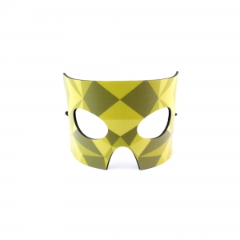
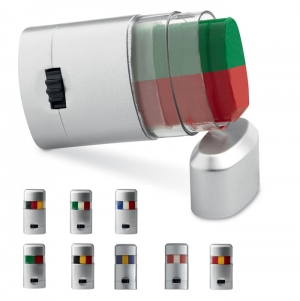
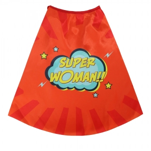

Organização e participação em celebrações locais
Desfiles, festas de associação, atividades escolares e encontros comunitários podem reunir participantes, equipas e público visitante com necessidades diferentes. Comece pelo programa e pelo papel de cada pessoa.
O Carnaval não é apresentado aqui como uma ocasião universal de troca de presentes. Um artigo pode apoiar a identificação, reunir materiais de uma oficina ou recordar uma participação, mas pode também ser desnecessário.
Carnavais portugueses: exemplos com território
A história municipal de Torres Vedras distingue a festa de rua organizada em 1912 da organização continuada a partir de 1923. Esta cronologia descreve o caso torriense, não uma data de nascimento de todos os carnavais. Fonte
O Inventário Nacional de Património Cultural Imaterial situa a Festa de Carnaval dos Caretos de Podence na comunidade desta aldeia de Macedo de Cavaleiros, no ciclo festivo de Inverno. Documenta também a participação comunitária e atividades paralelas. Fonte
Estes exemplos mostram por que é necessário confirmar tradições, linguagem e imagem com a organização local. O facto de uma celebração ter história documentada não prova uma tradição de distribuição de brindes nem autoriza a usar qualquer símbolo fora do seu contexto.
Papéis diferentes dentro do evento
Associações e grupos podem preparar materiais para quem desfila; escolas podem organizar oficinas e saídas; municípios e organizadores podem apoiar equipas de acolhimento e participantes. Os visitantes não precisam necessariamente do mesmo conjunto.
Defina se pretende identificar uma função, facilitar uma atividade ou criar uma memória. Não prometa que um objeto aumenta participação ou preserva uma tradição: esses resultados exigem observação e evidência próprias.
Exemplos pela função que cumprem
Fitas, cartões e pulseiras: podem diferenciar grupos ou apoiar a receção. A cor e a impressão devem ser legíveis, mas o objeto não garante autenticidade ou controlo de acesso sem um processo definido.
Têxteis para equipas: uma mensagem comum pode ajudar a reconhecer quem presta apoio. Considere a peça vestida com outras camadas e o movimento durante o percurso, em vez de avaliar apenas a peça pousada.
Sacos e cadernos de atividade: podem reunir materiais ou guardar registos numa oficina. Para uma recordação, uma peça gráfica pode relacionar-se com a edição e com a comunidade, desde que a imagem e o texto sejam revistos localmente.
Exemplos em contexto
Estes exemplos relacionam objetos com uma utilização concreta. A escolha depende de quem participa e das condições da atividade; as imagens não comprovam materiais, desempenho ou adequação.
Máscaras para compor uma personagem

Contexto
Uma oficina ou atividade de caracterização em que a
organização selecionou o artigo para os participantes concretos.
Razão da escolha
Pode servir de ponto de partida para uma
personagem e relacionar a preparação com a participação na atividade. Não representa
automaticamente uma tradição portuguesa nem substitui a revisão dos símbolos locais.
Aspetos a confirmar
Avalie ajuste, aberturas, sistema de
fixação e instruções. Não se trata de proteção respiratória. Para utilização por
crianças, respeite idades, capacidades e avisos do artigo; a orientação europeia de
brinquedos não certifica esta máscara.
Fonte
Pintura para uma atividade de caracterização

Contexto
Um momento organizado de caracterização, apenas
depois de confirmar o uso previsto, os destinatários e o modo de aplicação.
Razão da escolha
Pode acompanhar uma escolha de cores ou
personagem sem acrescentar uma peça de roupa. O seu interesse depende da atividade e
da vontade de participar; uma alternativa sem aplicação na pele deve continuar
disponível.
Aspetos a confirmar
Consulte rótulo, ingredientes, avisos,
zonas de aplicação e remoção. A FDA recomenda seguir as instruções, não partilhar
maquilhagem e não a usar junto dos olhos se não for destinada a essa zona. É
orientação geral norte-americana, não aprovação deste artigo para Portugal.
Fonte
Capas para atividades de representação

Contexto
Uma dinâmica de representação ou desfile de um grupo
que definiu personagens, movimento e acompanhamento.
Razão da escolha
Uma capa permite construir uma apresentação
visual sem exigir um conjunto completo de fantasia. A imagem ou mensagem pode
ligar-se à atividade, desde que respeite as escolhas e os participantes.
Aspetos a confirmar
Confirme tamanho, comprimento, fecho e
liberdade de movimentos no percurso previsto. Não deduza comportamento perante
chama, proteção ou adequação etária pela fotografia; o adulto responsável deve
conservar os avisos e instruções aplicáveis.
Fonte
Separar comunicação, disfarce e proteção
Um artigo promocional não equivale a uma máscara, fantasia ou equipamento de proteção. Visibilidade, ajuste, materiais e condições de utilização devem ser avaliados no objeto concreto; a mensagem festiva não demonstra adequação.
Quando participam crianças, confirme idades, avisos, acompanhamento e o modo de entregar cada peça ao adulto responsável. A distribuição indiferenciada pode ignorar as diferenças entre o público de uma oficina e o de um desfile.
Programa, edição e distribuição
Confirme o calendário e o percurso da edição em causa com a organização. Este guia não fixa datas anuais nem substitui o programa local.
Reveja nomes dos grupos, idiomas, cores de identificação e forma de entrega. Ensaie a receção com os materiais colocados como serão usados. Confirme tempos de aprovação e preparação para cada projeto e preveja alterações de percurso ou local.
Respeito cultural e destino dos materiais
Evite reduzir uma tradição local a uma imagem genérica de festa. Ouça a organização e permita formas de participação sem receber ou vestir um artigo.
O enquadramento da economia circular valoriza usar produtos e materiais durante mais tempo. Fonte Decida que partes podem voltar a ser utilizadas noutra edição e quais necessitam de atualização. Uma mensagem datada pode limitar esse uso, mas não há um resultado ambiental quantificado sem avaliação.
Separe objetivos promocionais da participação observada. Contar peças distribuídas não explica quem as utilizou nem qual foi o significado cultural da iniciativa.
Personalizar para leitura em movimento
Use hierarquia simples: função da equipa ou grupo primeiro, informação complementar depois. Teste a leitura à distância prevista e com o artigo na posição real de utilização.
A técnica deve ser avaliada no suporte e no acabamento concretos. Em peças vestíveis, preserve zonas funcionais e avisos; no cartão, não cubra furos, fechos ou informação necessária.
Perguntas frequentes
Todos os carnavais portugueses têm as mesmas tradições?
Não. Os exemplos de Torres Vedras e Podence têm contextos próprios; confirme a tradição e a programação locais.
Uma pulseira garante acesso ao desfile ou recinto?
Não. Só pode ter esse papel dentro do processo definido pela organização, sem garantia automática pela cor ou pela impressão.
É necessário distribuir uma recordação?
Não. Materiais partilhados numa atividade, informação ou participação sem oferta podem corresponder melhor ao objetivo.